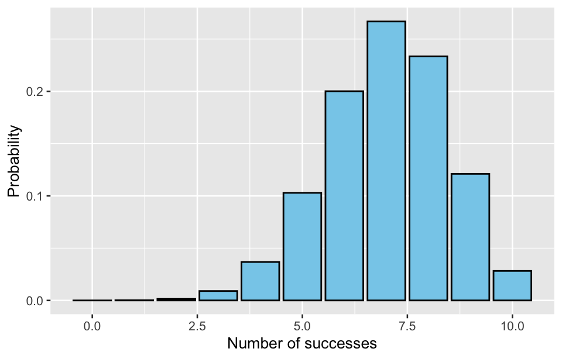
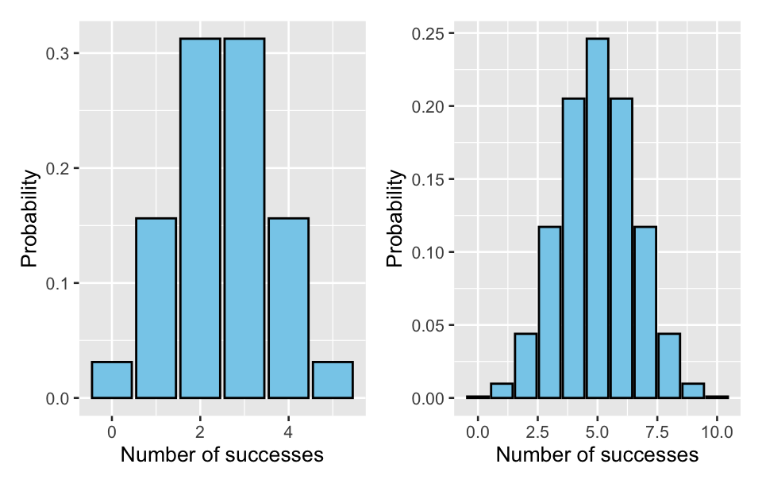
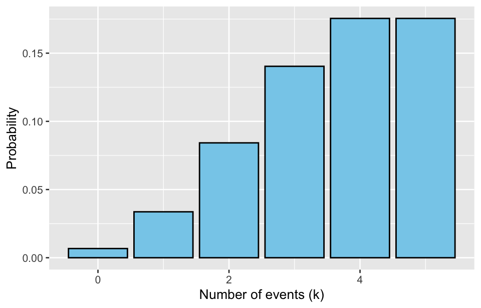
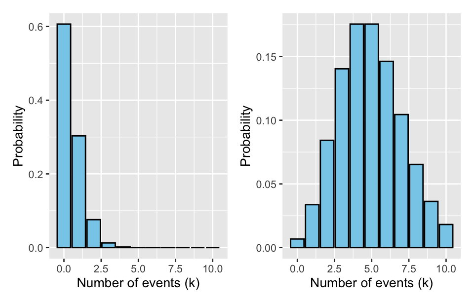

library(tidyverse)
library(ggplot2)
library(patchwork)
library(Hmisc)
library(MASS)10 Distributions of discrete variables
Discrete variables take on a finite or countable set of values, and their distribution can be described by the frequency or probability of each possible value. There are several common probability distributions used to model discrete variables. These distributions depend on the nature of the data and the context in which the events occur, which help to model the probability of different outcomes for events that occur in fixed trials or over time and space.
10.1 Binomial distribution
The binomial distribution is a discrete probability distribution that describes the number of successes in a fixed number of independent trials, where each trial has only two possible outcomes (often referred to as success or failure), and the probability of success remains constant in each trial.
10.1.1 Key Characteristics
- Number of trials (n): The distribution considers a fixed number of trials, denoted by n.
- Probability of success (p): Each trial has the same probability of success, denoted by p. The probability of failure is 1 - p.
- Independent trials: The outcome of one trial does not affect the outcome of any other trial.
10.1.2 Probability mass function (PMF)
The probability of getting exactly k successes in n trials is given by the binomial probability formula:
P(X = k) = \binom{n}{k} p^k (1-p)^{n-k}
Where X is the random variable representing the number of successes, \binom{n}{k} is the binomial coefficient, calculated as \frac{n!}{k!(n-k)!}, p is the probability of success, k is the number of successes, where k = 0, 1, 2, \ldots, n .
10.1.3 Mean and standard deviation
In a binomial distribution, the mean (or expected value) and standard deviation of the number of success X is given by: mean (expected value) \mu = np; standard deviation \sigma = \sqrt{n \cdot p \cdot (1 - p)}
where n is the number of trials, p is the probability of success in each trial, 1 - p is the probability of failure in each trial.
In R, you can calculate the mean and standard deviation using the following code:
n <- 10 # Number of trials
p <- 0.7 # Probability of success
# Calculate mean
mean <- n * p
print(paste("Mean:", mean))#> [1] "Mean: 7"# Calculate standard deviation
std_dev <- sqrt(n * p * (1 - p))
print(paste("Standard deviation:", std_dev))#> [1] "Standard deviation: 1.44913767461894"
Example 1:
Suppose you are conducting a clinical trial for a new medication. Each patient has a 70% chance of responding positively to the treatment. If you treat 10 patients, the binomial distribution can be used to model the number of positive responses.
Here n is 10 patients, p is 0.70. You can calculate the probability of exactly 7 patients responding positively:
P(X = 7) = \binom{10}{7} (0.7)^7 (0.3)^3 = 0.2668
So, there’s a 26.68% chance that exactly 7 patients will respond positively. You can calculate binomial probabilities using the dbinom() function:
# Probability of exactly 7 successes in 10 trials with p = 0.7
dbinom(7, size = 10, prob = 0.7)#> [1] 0.2668279For the binomial distribution, the mean and standard deviation of the proportion of successes \hat{p} are as follows: mean of \hat{p} is \mu_{\hat{p}} = p, standard deviation of \hat{p} (also called standard error) is:
\sigma_{\hat{p}} = \sqrt{\frac{p(1 - p)}{n}}
The mean of the proportion of successes is the true success probability p. This standard deviation decreases as the number of trials n increases, which means that the proportion of successes becomes more stable with a larger sample size.
10.1.4 Visualization
You can also plot the binomial distribution. The plot typically uses a bar chart to show the probability for each possible number of successes.
# Define parameters
n <- 10 # Number of trials
p <- 0.7 # Probability of success
# Generate data
x <- 0:n
probabilities <- dbinom(x, size = n, prob = p)
data <- tibble(successes = x, probability = probabilities)
# Create the plot
ggplot(data, aes(x = successes, y = probability)) +
geom_bar(stat = "identity", fill = "skyblue", color = "black") +
labs(x = "Number of successes", y = "Probability")
With n = 10 and p = 0.7, the generated plot will show the probability distribution for achieving different numbers of successes in 10 trials. When p = 0.7, the distribution typically peaks around 7 successes, meaning the most likely number of successes is near 9.
The shape of the distribution depends on the number of trials n and the probability of success p. When p = 0.5, the distribution is symmetric; when p is far from 0.5, the distribution becomes skewed. When n \to \infty , as long as p is not too close to 0 or 1, the binomial distribution approximates a normal distribution.
n1 <- 5
n2 <- 10
p <- 0.5
# Generate data
x1 <- 0:n1
x2 <- 0:n2
prob1 <- dbinom(x1, size = n1, prob = p)
prob2 <- dbinom(x2, size = n2, prob = p)
df1 <- tibble(successes = x1, probability = prob1)
df2 <- tibble(successes = x2, probability = prob2)
# Create the plot
ggplot(df1, aes(x = successes, y = probability)) +
geom_bar(stat = "identity", fill = "skyblue", color = "black") +
labs(x = "Number of successes", y = "Probability") +
ggplot(df2, aes(x = successes, y = probability)) +
geom_bar(stat = "identity", fill = "skyblue", color = "black") +
labs(x = "Number of successes", y = "Probability")
n1 <- 10
n2 <- 50
p <- 0.3
# Generate data
x1 <- 0:n1
x2 <- 0:n2
prob1 <- dbinom(x1, size = n1, prob = p)
prob2 <- dbinom(x2, size = n2, prob = p)
df1 <- tibble(successes = x1, probability = prob1)
df2 <- tibble(successes = x2, probability = prob2)
# Create the plot
ggplot(df1, aes(x = successes, y = probability)) +
geom_bar(stat = "identity", fill = "skyblue", color = "black") +
labs(x = "Number of successes", y = "Probability") +
ggplot(df2, aes(x = successes, y = probability)) +
geom_bar(stat = "identity", fill = "skyblue", color = "black") +
labs(x = "Number of successes", y = "Probability")10.1.5 Applications
The binomial distribution is widely applied in scenarios where there are only two possible outcomes (often referred to as “success” and “failure”) in repeated trials or experiments. Each trial is independent, and the probability of success remains constant across trials. Below are some key applications of the binomial distribution:
Confidence interval (CI) estimation
The CI for a population proportion (or population rate) is a range of values that is likely to contain the true proportion p of a population, which can be estimated based on a sample proportion \hat{p} = \frac{X}{n}, where X is the number of successes and n is the sample size.
The Wald method is the traditional approach to estimate the confidence interval for a population proportion. The formula is:
\hat{p} \pm Z_{\alpha/2} \times \sqrt{\frac{\hat{p}(1 - \hat{p})}{n}}
Where \hat{p} is the sample proportion (i.e., the number of successes divided by the total sample size), Z_{\alpha/2} is the critical value from the standard normal distribution for a given confidence level (e.g., 1.96 for 95% confidence), n is the sample size, \sqrt{\frac{\hat{p}(1 - \hat{p})}{n}} is the standard error of the proportion.
Example 2:Suppose you take a sample of 200 people, and 50 people have a positive result. To calculate a 95% confidence interval for the population rate of positive.
If you want to manually calculate the Wald CI, you can write your own R code, for example:
# Example: 50 successes in 200 trials x <- 50 # Number of successes n <- 200 # Total number of trials p_hat <- x / n # Sample proportion # Z-value for 95% confidence z <- 1.96 # Standard error se <- sqrt(p_hat * (1 - p_hat) / n) # Confidence interval lower <- p_hat - z * se upper <- p_hat + z * se # Output the result cat("95% CI: [", lower, ",", upper, "]\n")#> 95% CI: [ 0.1899875 , 0.3100125 ]The
binconf()function from theHmiscpackage allows you to compute confidence intervals for proportions using several methods, including Wald, Wilson, and Agresti-Coull.binconf(x = 50, n = 200, alpha = 0.05, method = "asymptotic")#> PointEst Lower Upper #> 0.25 0.1899886 0.3100114For small samples or when \hat{p} is close to 0 or 1, the Wald method might not perform well. Other methods, such as the Wilson score interval, Agresti-Coull interval, or Bayesian intervals, are often preferred in these cases.
Wilson Score Interval:
\frac{\hat{p} + \frac{Z^2}{2n}}{1 + \frac{Z^2}{n}} \pm \frac{Z}{1 + \frac{Z^2}{n}} \sqrt{\frac{\hat{p}(1 - \hat{p})}{n} + \frac{Z^2}{4n^2}}
One-sample proportion test
This test determines whether the sample proportion is significantly different from the known population proportion. The test statistic for this comparison is based on the standard error of the sample proportion, which is given by:
SE = \sqrt{\frac{p_0(1 - p_0)}{n}}where p_0 is the known population proportion, and n is the sample size.
The test statistic Z is calculated as:
Z = \frac{\hat{p} - p_0}{SE}
Example 3:Suppose each patient has a 70% chance of responding to a treatment. In a clinical trial, 13 out of a set of 20 patients taking this treatment have positive responses. Determine if there is a significant difference between the sample and population proportion.
You can perform the one-sample proportion test using the
prop.test()function orbinom.test()function in R:# Example: 13 successes in 20 trials, comparing to a known population proportion of 0.370 x <- 13 # Number of successes n <- 20 # Sample size p0 <- 0.70 # Known population proportion # Perform one-sample proportion test prop.test(x = x, n = n, p = p0)#> #> 1-sample proportions test with continuity correction #> #> data: x out of n, null probability p0 #> X-squared = 0.059524, df = 1, p-value = 0.8073 #> alternative hypothesis: true p is not equal to 0.7 #> 95 percent confidence interval: #> 0.4094896 0.8369133 #> sample estimates: #> p #> 0.65binom.test(x = x, n = n, p = p0)#> #> Exact binomial test #> #> data: x and n #> number of successes = 13, number of trials = 20, p-value = 0.6295 #> alternative hypothesis: true probability of success is not equal to 0.7 #> 95 percent confidence interval: #> 0.4078115 0.8460908 #> sample estimates: #> probability of success #> 0.65Two-sample proportion test
This test determines whether there is a significant difference between the proportions of two independent samples. The test statistic is based on the difference between the sample proportions of the two groups:
Z = \frac{\hat{p}_1 - \hat{p}_2}{SE}
Where \hat{p}_1 and \hat{p}_2 are the sample proportions from the two groups, and SE is the standard error of the difference in proportions, calculated as:
SE = \sqrt{\hat{p}(1 - \hat{p}) \left( \frac{1}{n_1} + \frac{1}{n_2} \right)}
Here, \hat{p} is the pooled sample proportion:
\hat{p} = \frac{X_1 + X_2}{n_1 + n_2}
where X_1 and X_2 are the number of successes in the two groups, and n_1 and n_2 are the sample sizes of the two groups.
Example 4:Suppose you have two independent groups: Group A 30 successes out of 150 trials; Group B 45 successes out of 200 trials. Perform the two-sample proportion test to check if the proportions in these two groups differ significantly.
x <- c(30, 45) # Number of successes in each group n <- c(150, 200) # Sample sizes of each group # Perform two-sample proportion test prop.test(x = x, n = n)#> #> 2-sample test for equality of proportions with continuity correction #> #> data: x out of n #> X-squared = 0.18702, df = 1, p-value = 0.6654 #> alternative hypothesis: two.sided #> 95 percent confidence interval: #> -0.11712834 0.06712834 #> sample estimates: #> prop 1 prop 2 #> 0.200 0.225
10.2 Poisson distribution
The Poisson distribution is a discrete probability distribution that expresses the probability of a given number of events occurring in a fixed interval of time or space, given that these events occur with a known constant rate and independently of the time since the last event. For examples, the number of phone calls received by a call center in an hour, the number of hospital admissions per day.
10.2.1 Key characteristics
- Events are independent: The occurrence of one event does not affect the probability of another event.
- The rate is constant: The average number of events in a fixed interval is constant.
- Rare events: The events are typically rare relative to the observation period or space.
10.2.2 Probability mass function (PMF)
The probability of observing k events in a given interval is:
P(X = k) = \frac{\lambda^k e^{-\lambda}}{k!}
Where X is the random variable representing the number of events, k is the number of events (a non-negative integer), \lambda is the average number of events (rate parameter), e is the base of the natural logarithm.
10.2.3 Mean and standard deviation
In a Poisson distribution, mean \mu = \lambda, variance \sigma = \sqrt\lambda. This means that the mean and variance of the Poisson distribution are both equal to the rate parameter \lambda.
Example 5:
If the average number of patients arriving at a hospital per hour is 50, you could use a Poisson distribution with \lambda = 50 to model the number of patients expected to arrive in any given hour.
You can use the rpois() function in R to generate random values from a Poisson distribution.
set.seed(200)
# Simulate the number of patients arriving in 8 hours from a Poisson distribution with a rate of 5
lambda <- 50
k <- 8
rpois(n = k, lambda = lambda)#> [1] 50 51 53 53 50 49 42 46You can use the dpois() function to calculate the probability of a specific number of events.
# Probability of observing exactly 5 events when lambda is 5
dpois(x = k, lambda = lambda)#> [1] 1.868596e-1310.2.4 Visualization
You can plot the Poisson distribution. Here’s an example where we plot the probability mass function (PMF) of the Poisson distribution for different values of k (the number of events), given a specific rate \lambda.
lambda <- 5
k_values <- 0:5 # Values from 0 to 10 events
probabilities <- dpois(k_values, lambda = lambda)
poisson_data <- tibble(k_values, probabilities)
ggplot(poisson_data, aes(x = k_values, y = probabilities)) +
geom_bar(stat = "identity", fill = "skyblue", color = "black") +
labs(x = "Number of events (k)", y = "Probability")
The resulting plot will show the probability mass function for the Poisson distribution with \lambda = 5 . It will depict how likely different counts of events (0, 1, 2, 3, etc.) are.
The shape of the Poisson distribution depends on the parameter \lambda, which represents the average number of events in a given time or space interval. As \lambda changes, the shape of the distribution also changes in the following ways:
- For very small values of \lambda (e.g., close to 0), the distribution is skewed to the right. Most of the probability mass is concentrated around 0, with a sharp drop-off for higher values of k. The distribution is unimodal with its peak near k = 0 .2.
- As \lambda increases, the distribution becomes more symmetric. The peak of the distribution shifts to the right, centering around \lambda, since the expected number of events increases. The skewness reduces as \lambda increases.
- When \lambda becomes large (e.g., \lambda > 10), the distribution approximates a normal distribution. The distribution becomes nearly symmetric and bell-shaped, with the mean and variance both close to \lambda.
lambda1 <- 0.5
lambda2 <- 5
k_values <- 0:10 # Values from 0 to 10 events
prob1 <- dpois(k_values, lambda = lambda1)
prob2 <- dpois(k_values, lambda = lambda2)
df1 <- tibble(k_values, probabilities = prob1)
df2 <- tibble(k_values, probabilities = prob2)
ggplot(df1, aes(x = k_values, y = probabilities)) +
geom_bar(stat = "identity", fill = "skyblue", color = "black") +
labs(x = "Number of events (k)", y = "Probability") +
ggplot(df2, aes(x = k_values, y = probabilities)) +
geom_bar(stat = "identity", fill = "skyblue", color = "black") +
labs(x = "Number of events (k)", y = "Probability")
10.2.5 Applications
The poisson.test() function is used to perform an exact test for the rate parameter \lambda of a Poisson distribution. This function helps compare the observed count data (events) to an expected rate or two Poisson-distributed samples to check whether the observed events match a hypothesized or known rate.
One-sample comparison
To test whether the observed number of events follows a hypothesized Poisson rate \lambda.
Example 6:An emergency room wants to determine if the average number of patients arriving per hour differs from a known average rate. Suppose the historical data shows an average of 8 patients arriving per hour. They observed 17 patients arriving in 2 hours.Test if the observed rates differ significantly from the historical average of 8 patients per hour.
# Observed data x <- 17 # Number of patients in the second sample t <- 2 # Time period in hours # Hypothesized rate (historical average) lambda_0 <- 8 poisson.test(x, T = t, r = lambda_0)#> #> Exact Poisson test #> #> data: x time base: t #> number of events = 17, time base = 2, p-value = 0.8016 #> alternative hypothesis: true event rate is not equal to 8 #> 95 percent confidence interval: #> 4.951563 13.609323 #> sample estimates: #> event rate #> 8.5Two-sample comparison
To test whether the rates from two Poisson-distributed samples are equal.
Example 7:
A researcher is studying the incidence of a rare disease in two different regions to see if the rate of new cases per year is the same. The researcher wants to compare the rates of the disease in two regions. 15 new cases of the disease were observed in 2 years in region A. 4 new cases of the disease were observed in 2 years in region B. Test if the disease incidence rates in the two regions are significantly different.
# Observed data
x1 <- 15 # New cases in region A
T1 <- 2 # Number of years in region A
x2 <- 4 # New cases in region B
T2 <- 2 # Number of years in region B
poisson.test(c(x1, x2), T = c(T1, T2))#>
#> Comparison of Poisson rates
#>
#> data: c(x1, x2) time base: c(T1, T2)
#> count1 = 15, expected count1 = 9.5, p-value = 0.01921
#> alternative hypothesis: true rate ratio is not equal to 1
#> 95 percent confidence interval:
#> 1.194652 15.522225
#> sample estimates:
#> rate ratio
#> 3.7510.3 Negative binomial distribution
The Negative Binomial distribution is a probability distribution used to model the number of trials required to achieve a certain number of successes in a sequence of independent and identically distributed Bernoulli trials. Unlike the binomial distribution, which counts the number of successes in a fixed number of trials, the negative binomial distribution counts the number of failures before achieving a fixed number of successes.
For Eexample, the number of patients treated before achieving 5 successful recoveries; The number of hospital visits until a patient recovers (achieves a fixed number of successful treatments).;The number of failures (e.g., adverse events or complications) before a certain number of successful outcomes (e.g., disease remission).
10.3.1 Key characteristics
- Parameter r: The number of successes we want to achieve.
- Parameter p : The probability of success on each trial.
- Support: The negative binomial distribution models the number of failures before the r-th success occurs.
10.3.2 Probability mass function (PMF)
The probability that there are k failures before the r-th success is given by:
P(X = k) = \binom{k + r - 1}{k} p^r (1 - p)^k
where X is the number of failures, r is the number of successes, and p is the probability of success.
10.3.3 Mean and standard deviation
For negative binomial distribution, the mean and standard deviation are calculated using the number of successes r and the probability of success p.
mean: \mu = \frac{r(1 - p)}{p} standard deviation: \sigma = \sqrt\frac{r(1 - p)}{p^2}
The Negative binomial distribution is often used as an alternative to the Poisson distribution when the data show overdispersion, meaning the variance exceeds the mean.
10.3.4 Applications
The negative binomial distribution can be used to describe the clustering of organisms and also to compare the differences in the population mean.
Clustering of organisms
The negative ninomial distribution is often used in ecological studies and public health to describe the clustering of organisms or events when the data are overdispersed (i.e., the variance is greater than the mean). This distribution is particularly useful in modeling situations where events (such as organisms) tend to cluster or aggregate rather than be randomly distributed.
Example 8:A hospital is studying the clustering of bacterial infections in patients within a specific unit. The hospital collects data on the number of bacterial colonies detected in wound samples from 50 patients over a month. The mean number of bacterial colonies per patient is \lambda = 10, but due to clustering, some patients have many colonies, while others have very few. This clustering leads to overdispersion, where the variance is greater than the mean. To model the number of bacterial colonies detected per patient and estimate the clustering pattern.
# Simulate data for 50 patients using a Negative Binomial distribution set.seed(123) num_patients <- 50 mean_colonies <- 10 # Average number of bacterial colonies per patient dispersion_param <- 3 # Dispersion parameter (greater dispersion leads to more clustering) # Generate data for the number of colonies per patient colonies <- rnbinom(num_patients, size = dispersion_param, mu = mean_colonies) # Summary of the simulated data summary(colonies)#> Min. 1st Qu. Median Mean 3rd Qu. Max. #> 1.00 5.00 9.00 9.32 12.75 22.00# Fit a Negative Binomial model to the data nb_model <- glm.nb(colonies ~ 1) # View model results summary(nb_model)#> #> Call: #> glm.nb(formula = colonies ~ 1, init.theta = 4.368663822, link = log) #> #> Coefficients: #> Estimate Std. Error z value Pr(>|z|) #> (Intercept) 2.232 0.082 27.22 <2e-16 *** #> --- #> Signif. codes: 0 '***' 0.001 '**' 0.01 '*' 0.05 '.' 0.1 ' ' 1 #> #> (Dispersion parameter for Negative Binomial(4.3687) family taken to be 1) #> #> Null deviance: 53.936 on 49 degrees of freedom #> Residual deviance: 53.936 on 49 degrees of freedom #> AIC: 306.89 #> #> Number of Fisher Scoring iterations: 1 #> #> #> Theta: 4.37 #> Std. Err.: 1.35 #> #> 2 x log-likelihood: -302.885# Plot histogram of the data to visualize clustering colonies |> as_tibble() |> ggplot(aes(x = value)) + geom_histogram(bins = 10, fill = "skyblue", color = "black", alpha = 0.7) + labs(title = "Clustering of bacterial colonies", x = "Number of bacterial colonies per patient", y = "Frequency")The data are generated using a negative binomial distribution to reflect the fact that bacterial colonies cluster within certain patients. The dispersion parameter controls how much clustering there is (the smaller the parameter, the more clustering). The fitted model allows you to estimate the degree of clustering and assess whether the number of colonies per patient significantly deviates from a purely random (Poisson) distribution.
In practice, this kind of modeling can help hospitals or researchers understand the spread and concentration of infections in patient populations. It is also commonly used in ecological studies to model the distribution of species, such as insects or plants, in a habitat.
One-sample comparison
For a single-sample comparison, you compare the sample mean to a known or hypothesized population mean. You may use a Wald test or likelihood ratio test in the context of a negative binomial regression model to compare the sample mean with the hypothesized mean.
Example 9:Suppose a hospital wants to check if the average number of emergency room (ER) visits due to asthma per month has increased compared to a hypothesized national mean. Historically, it is known that the average number of ER visits due to asthma per month is \mu_0 = 30. The hospital collects data for 12 months and finds that the mean number of ER visits per month is 35. To compare whether the hospital’s average ER visits due to asthma differ significantly from the national average of 30 visits per month.
# Simulate data for 12 months of ER visits (mean = 35, size parameter controls dispersion) set.seed(200) er_visits <- rnbinom(12, size = 5, mu = 35) # Fit a Negative Binomial model and compare the mean to 30 mean_visits <- 30 # Hypothesized national mean nb_model <- glm.nb(er_visits ~ 1) # Null model (intercept-only) # Test if the mean differs from 30 summary(nb_model)#> #> Call: #> glm.nb(formula = er_visits ~ 1, init.theta = 8.233978635, link = log) #> #> Coefficients: #> Estimate Std. Error z value Pr(>|z|) #> (Intercept) 3.3142 0.1147 28.9 <2e-16 *** #> --- #> Signif. codes: 0 '***' 0.001 '**' 0.01 '*' 0.05 '.' 0.1 ' ' 1 #> #> (Dispersion parameter for Negative Binomial(8.234) family taken to be 1) #> #> Null deviance: 11.962 on 11 degrees of freedom #> Residual deviance: 11.962 on 11 degrees of freedom #> AIC: 94.162 #> #> Number of Fisher Scoring iterations: 1 #> #> #> Theta: 8.23 #> Std. Err.: 4.27 #> #> 2 x log-likelihood: -90.162The results will show whether the average number of ER visits significantly differs from the hypothesized mean.
Two-sample comparison
For a two-sample comparison, you compare the means of two independent samples.
A common approach for comparing two means in the negative binomial distribution is using a negative binomial regression model. This is analogous to a two-sample t-test, but tailored for count data.
Example 10:A clinical trial is conducted to compare the number of hospitalizations between two groups of patients: those receiving a new drug and those receiving a standard drug for chronic obstructive pulmonary disease. Over the course of a year, the hospital records the number of hospitalizations for both groups.To determine if the mean number of hospitalizations differs significantly between the two groups.
set.seed(200) # Simulate data for two groups group <- factor(rep(1:2, each = 100)) # Two groups counts <- rnbinom(200, size = 5, mu = if_else(group == 1, 10, 15)) # Negative Binomial counts # Fit a Negative Binomial regression model nb_model <- glm.nb(counts ~ group) # View the summary of the model summary(nb_model)#> #> Call: #> glm.nb(formula = counts ~ group, init.theta = 5.66947187, link = log) #> #> Coefficients: #> Estimate Std. Error z value Pr(>|z|) #> (Intercept) 2.26176 0.05297 42.701 < 2e-16 *** #> group2 0.35928 0.07278 4.937 7.95e-07 *** #> --- #> Signif. codes: 0 '***' 0.001 '**' 0.01 '*' 0.05 '.' 0.1 ' ' 1 #> #> (Dispersion parameter for Negative Binomial(5.6695) family taken to be 1) #> #> Null deviance: 234.55 on 199 degrees of freedom #> Residual deviance: 210.16 on 198 degrees of freedom #> AIC: 1258.7 #> #> Number of Fisher Scoring iterations: 1 #> #> #> Theta: 5.669 #> Std. Err.: 0.859 #> #> 2 x log-likelihood: -1252.688The coefficient for group will tell you whether the mean number of hospitalizations differs between the two groups. If the p-value for the group variable is less than 0.05, there is a statistically significant difference in hospitalizations between the new and standard drug groups.
10.4 Statistical models for count data
10.4.1 Poisson regression
A common model used to analyze count data, assuming that the mean is equal to the variance. It is appropriate when the count data are not overdispersed.
10.4.2 Negative binomial regression
Used when count data exhibit overdispersion. This model is more flexible than Poisson regression, as it allows the variance to exceed the mean.
10.4.3 Zero-inflated models
In some medical data, there may be an excess of zero counts (e.g., a large number of patients with no hospital visits). Zero-inflated Poisson (ZIP) or Zero-inflated Negative Binomial (ZINB) models can account for this excess of zeros.